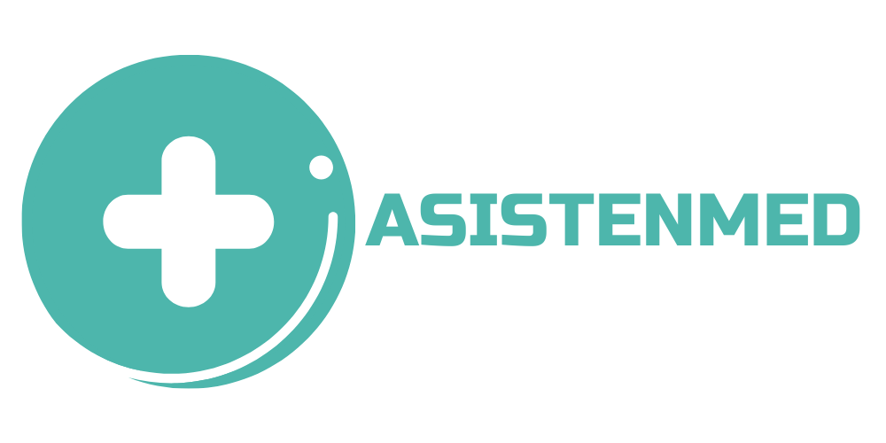

<div class="fixed-top">
  <nav class="navbar navbar-expand-lg navbar-light bg-primary">
      <div class="container">
        <a routerLink="/" class="navbar-brand">
          
        </a>
        <button
          class="navbar-toggler"
          type="button"
          data-bs-toggle="collapse"
          data-bs-target="#navbarSupportedContent"
          aria-controls="navbarSupportedContent"
          aria-expanded="false"
          aria-label="Toggle navigation"
        >
          <span class="navbar-toggler-icon"></span>
        </button>
        <div class="collapse navbar-collapse" id="navbarSupportedContent">
          <ul class="nav navbar-nav ms-auto mb-2 mb-lg-0">
            <li
                routerLinkActive="active"
                class="nav-item"
              >
                <a class="nav-link me-lg-2 mb-lg-0 mb-2" mat-raised-button routerLink="/login" >
                  Iniciar Sesión
                  <span class="material-icons">
                    login
                  </span>
                </a>
              </li>
          </ul>
        </div>
      </div>
    </nav>

</div>
  
<router-outlet></router-outlet>

